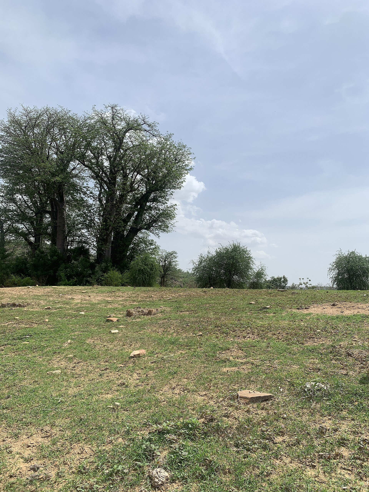
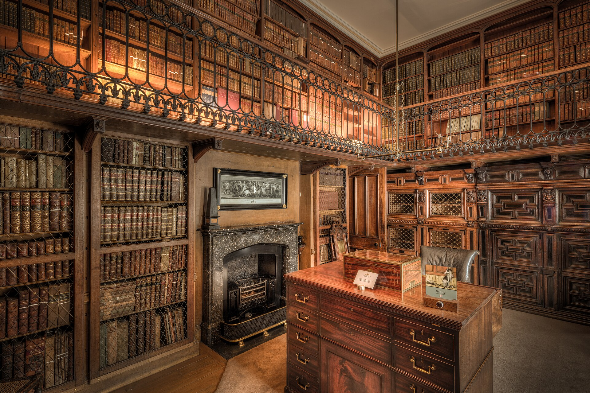

BEM-ESTAR ESTUDANTIL
Saúde mental e bem-estar nos estudos
Aprender também envolve cuidar de si. Este guia reúne ideias acolhedoras para atravessar os desafios escolares com apoio, equilíbrio e respeito aos próprios limites.
Introdução
O bem-estar influencia a atenção, a memória, a motivação e a forma como lidamos com dificuldades. Isso não significa que toda preocupação possa ser resolvida com uma técnica de estudo, nem que cansaço ou sofrimento sejam falta de disciplina. A vida escolar faz parte de uma vida maior, que também inclui sono, relações, responsabilidades, descanso e acontecimentos pessoais.
As sugestões a seguir são educativas e não substituem a conversa com um adulto de confiança ou o atendimento de um profissional. Cada estudante vive uma realidade diferente; escolha passos possíveis e peça ajuda quando precisar.
1. Bem-estar também faz parte da aprendizagem
Quando estamos descansados e nos sentimos seguros, costuma ser mais fácil prestar atenção, organizar ideias e persistir diante de uma questão difícil. Em períodos de preocupação intensa ou cansaço, tarefas que normalmente parecem simples podem exigir mais esforço. Isso não mede inteligência nem define o potencial de ninguém: é um sinal de que talvez seja preciso ajustar o ritmo ou buscar suporte.
Em vez de tentar estudar por horas ignorando o corpo, observe como você está. Pergunte: “O que preciso agora para continuar de um jeito possível?” Às vezes a resposta é beber água, fazer uma pausa, pedir explicação, dividir a tarefa ou conversar com alguém.
2. Pressão escolar, estresse e sobrecarga
Provas, trabalhos e expectativas podem acumular. Irritabilidade, dificuldade de relaxar, sensação de estar sempre atrasado, alterações de sono ou perda de concentração podem acompanhar períodos exigentes. Esses sinais não permitem concluir por conta própria que exista um problema de saúde; servem como convite para observar a situação e conversar com alguém.
Faça uma lista do que está pendente e escolha um próximo passo pequeno. Por exemplo, em vez de “estudar toda a matéria”, defina “ler duas páginas e anotar três dúvidas”. Se os prazos forem incompatíveis, converse com um professor, responsável ou coordenação para avaliar alternativas.
- Separe o que é urgente do que pode ser combinado ou reorganizado.
- Peça instruções quando uma tarefa não estiver clara.
- Evite usar a rotina de outra pessoa como medida do que você consegue fazer.
3. Equilíbrio, sono e hábitos saudáveis
Estudar não precisa ocupar todo o tempo livre. Reservar momentos para família, amizades, interesses e descanso ajuda a manter uma rotina mais sustentável. O sono também é importante para a disposição e para consolidar o que foi aprendido. Tente manter horários razoavelmente regulares quando isso for possível, criando uma rotina tranquila antes de dormir.
Hábitos saudáveis não precisam começar com mudanças grandes. Uma caminhada, uma refeição sem pressa, alongar-se entre tarefas ou deixar o material preparado pode ser um começo. A realidade de cada casa varia; escolha opções acessíveis e converse com um responsável se precisar de apoio para organizar horários.
4. Como lidar com uma nota baixa e com o medo de avaliações
Uma nota é uma informação sobre uma avaliação específica, não um resumo de quem você é. Depois de uma nota abaixo do esperado, espere o momento em que consiga olhar para ela com calma. Identifique se a dificuldade veio de conteúdo, interpretação, falta de tempo, distração ou preparação insuficiente. Então escolha uma ação: rever um conceito, refazer uma questão ou pedir orientação.
Para provas e apresentações, prepare-se em etapas: organize o material, pratique com antecedência e ensaie uma parte de cada vez. Antes de começar, respirar lentamente e ler as instruções com calma pode ajudar a retomar o foco; não há garantia de que o nervosismo desapareça, e tudo bem pedir apoio se ele estiver atrapalhando muito.

5. Autoconfiança sem comparação excessiva
As pessoas têm experiências, oportunidades e ritmos diferentes. Comparar apenas resultados visíveis pode esconder o esforço e as dificuldades de cada um. Em vez disso, acompanhe seu próprio progresso: “O que entendo hoje que ainda não entendia na semana passada?” Guarde dúvidas e pequenas conquistas para perceber avanços concretos.
Autoconfiança não significa nunca errar. Significa reconhecer que é possível aprender, pedir ajuda e tentar outra estratégia. Use frases realistas, como “ainda estou aprendendo este assunto”, no lugar de conclusões definitivas sobre sua capacidade.
6. Conversar e saber quando procurar ajuda
Escolha uma pessoa confiável — familiar, responsável, professor, orientador ou outro adulto seguro — e conte com clareza o que está acontecendo. Você pode começar dizendo: “Estou me sentindo sobrecarregado e preciso conversar.” Se falar for difícil, escrever uma mensagem também pode ser uma forma de começar.
Quando o sofrimento persiste, piora ou interfere bastante no sono, nas relações, na escola ou nas atividades diárias, converse com um adulto responsável e peça ajuda para buscar um profissional de saúde qualificado. Não é necessário esperar chegar a um limite para pedir orientação. Se houver risco imediato à segurança, procure agora um adulto de confiança ou um serviço de emergência local.
7. Um plano gentil para esta semana
Escolha uma prioridade escolar, uma pausa diária e uma pessoa com quem possa conversar se a semana ficar difícil. No fim de cada dia, anote uma coisa concluída e uma próxima ação pequena. Ajuste o plano quando surgirem imprevistos; flexibilidade é parte de uma rotina saudável.
Erros comuns a evitar
- Acreditar que descansar é preguiça ou que pedir ajuda é fracasso.
- Tentar compensar uma dificuldade estudando sem pausas e sem sono adequado.
- Tratar uma nota, um dia ruim ou uma comparação como definição permanente da própria capacidade.
- Esperar que uma única técnica resolva sozinha uma situação complexa.
Resumo
Bem-estar e aprendizagem caminham juntos. Observe sinais de sobrecarga, organize tarefas em passos possíveis, preserve descanso e relações, e procure apoio de pessoas confiáveis quando necessário. Um profissional qualificado pode ajudar quando o sofrimento é persistente ou intenso; este artigo não faz diagnósticos.

Conclusão
Você merece aprender sem precisar ignorar o que sente. Dê valor aos pequenos avanços, respeite seus limites e permita-se pedir apoio. Cuidar de si não é sair do caminho dos estudos: é construir condições mais humanas para continuar nele.